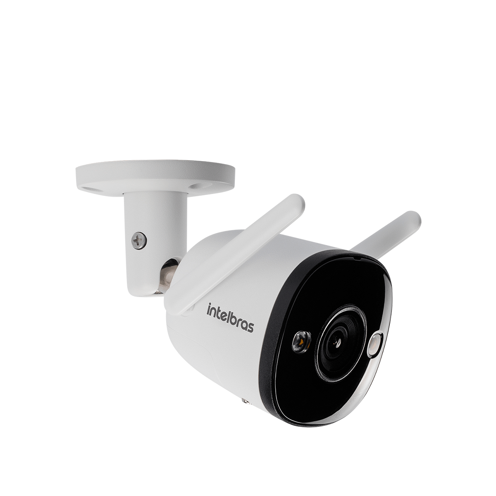

Monitoramento preditivo 24h
Você navega.
O SAFEBOAT AI
cuida do resto.
3naufrágios
evitados
evitados
+R$ 10 miem prejuízos
evitados
evitados
+100embarcações
monitoradas
monitoradas
Monte seu plano
em 5 minutos
Três perguntas sobre o seu barco, preço na tela e contratação 100% online — aqui mesmo, do seu celular.
A partir de R$ 249/mês · instalação em ~4h · sem furar o casco
← aponte a câmeraO kit que vai no seu barco
Instalação em ~4 horas, sem furar o casco — peça uma demonstração aqui no estande





safeboat.tech
App Store · Google Play
WhatsApp (48) 99140-0063
WhatsApp (48) 99140-0063